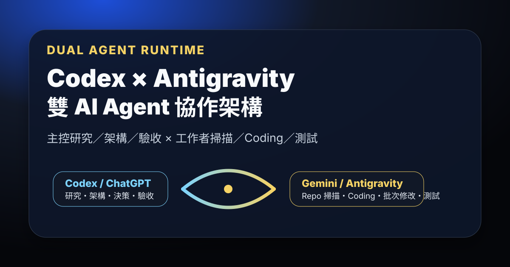

Threads｜wan.meow：Codex × Antigravity 雙 AI Agent 架構，主控與工作者分工協作

一句話摘要
這則 Threads 值得保存，因為它把「多 AI 訂閱怎麼搭配使用」整理成可落地的 agent runtime 協作架構：Codex / ChatGPT 做主控與驗收，Gemini / Antigravity 做大量 repo 掃描、coding、批次修改與測試，兩邊透過有限度委派與結果回報協作，而不是手動複製貼上。
來源脈絡
- Threads 作者：wan.meow（@wan.meow）。
- 貼文主張：用 Codex × Antigravity 雙 AI Agent 架構，把訂閱費與 token 用得更划算。
- 主控分工：ChatGPT / Codex 負責研究、架構、決策、整合與最後驗收。
- 工作者分工：Gemini / Antigravity 負責 repo 掃描、coding、批次修改、測試等大量工作。
- 公開架構頁：https://a275618631.github.io/codex-antigravity-collaboration/
- GitHub repo：https://github.com/a275618631/codex-antigravity-collaboration
架構核心
公開頁面把這套方法定位為「參考架構＋實際雙平台案例」，不是新的 agent 開發框架，也不是一鍵安裝的完整軟體套件。它的核心原則是：
- 先使用平台原生能力，不重做 Codex 或 Antigravity 已經會做的多 agent / subagent / tool / permission 能力。
- 把平台視為 agent runtime，而不是單一 agent；每個 runtime 裡面可以再有主 agent、角色 agent、平行 agent 或 subagent。
- 跨平台只做有限度委派，避免你丟給我、我再丟給別人、最後形成無限循環。
- 多個 agent 可同時閱讀、分析、審查；真正修改程式時用 Git branch 或 worktree 隔離，最後再 review / merge。
為什麼不是再裝一套多 Agent 框架
作者的觀點是：Codex 與 Antigravity 本身已經具備多 agent、工具、權限與工作流程。如果只是為了讓它們互相合作，就再加大型中央調度系統，反而會增加設定、更新、除錯與維護成本。更務實的方式是：
- 平台內部：用各自原生平行 agent / subagent 處理。
- 平台之間：用小型 Task / Result Packet 交換任務與結果。
- 重要決策：讓不同 agent 提供第二意見或唯讀辯論，再由單一執行者修改。
- 複雜度：只有真的需要跨主機、排隊、租約、心跳、失敗重試時，才導入更薄的 broker。
目前進度與邊界
公開狀態頁明確把已完成、部分完成、規劃中與探索中分開。歸檔時可保存的狀態包括：
- Codex ↔ Antigravity 基本橋接：已實作，核心只讀 smoke response 通過。
- Task / Result Packet：已實作，用固定結構描述任務、限制與結果回報。
- 有限度跨平台委派：已實作，一跳 guard 是目前協議與驗證的一部分。
- 唯讀雙方審查／辯論：已實作，重要決策可由不同 agent 提出意見與反駁。
- 平台原生平行 Agent：採用平台能力，不另外重做。
- Shared Skills：部分完成，仍需重新確認唯一來源與同步差異。
- 本地模型隱私分流、跨電腦協作、broker / lease / heartbeat / retry：仍屬規劃或探索。
隱私設計重點
公開隱私文件把未來 privacy lane 設計成：本地分類 → 本地最小化 → 必要時可逆假名化 → 選擇性使用雲端 → 本地還原。它也提醒：
- 公開資料可交給雲端 AI。
- 內部資料需先刪除不必要資訊、遮掉可識別內容，再依政策決定是否送出。
- 敏感資料可考慮 reversible pseudonymization，但這只能降低直接暴露風險，不等於零外洩風險。
- 密碼、金鑰、禁止外傳內容或高度機密資料應只走本地模型或本地流程。
- PII 偵測不應自造輪子，可參考 Presidio；本地模型只作為額外語意判斷來源。
對 AI 學習雷達的保存價值
這則不是單一工具新聞，而是很接近 2026 agent 工程實務的工作流設計：多平台、多模型、多 agent 並用時，重點不是「誰最強」，而是怎麼把主控、工作者、審查者、隱私邊界與寫入安全拆清楚。對欒帥目前使用 Codex、Claude Code、Hermes subagent 與本地工具的工作流來說，這篇可作為「跨 runtime 協作」的參考樣板。
原始連結
Threads：
https://www.threads.com/@wan.meow/post/DcTofOFmqc3
架構說明頁：
https://a275618631.github.io/codex-antigravity-collaboration/
GitHub repo：
https://github.com/a275618631/codex-antigravity-collaboration